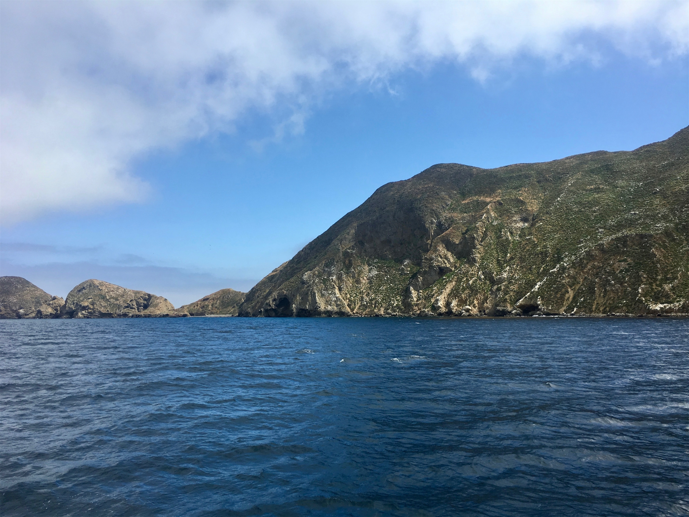
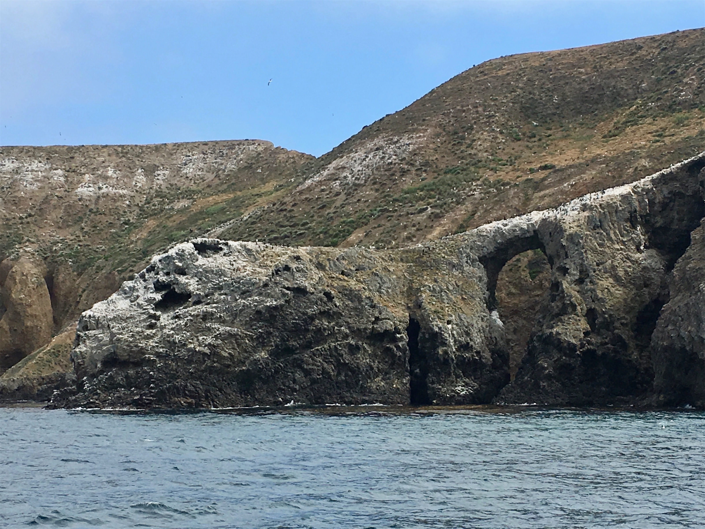
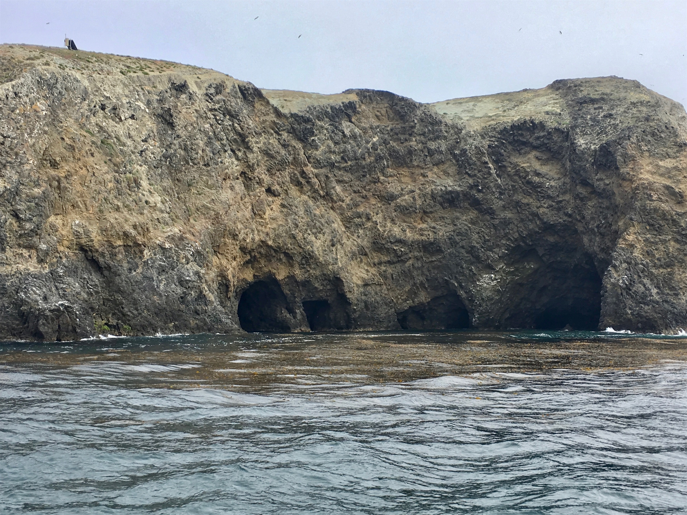
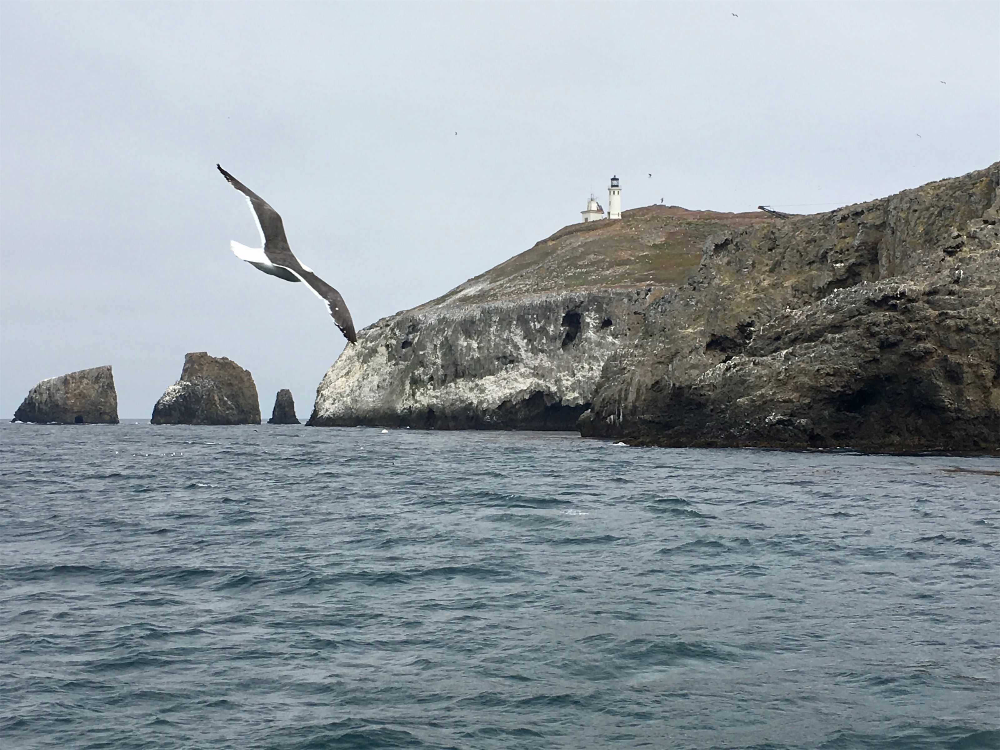
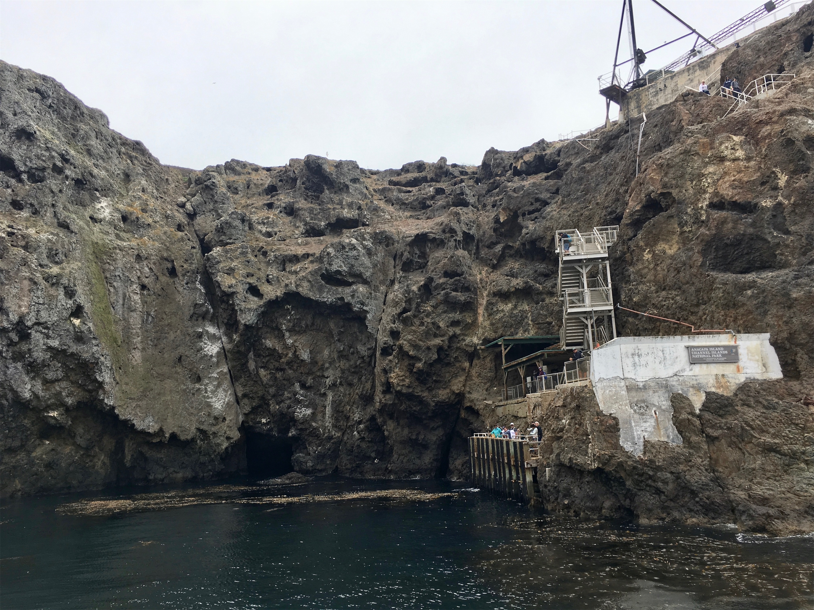
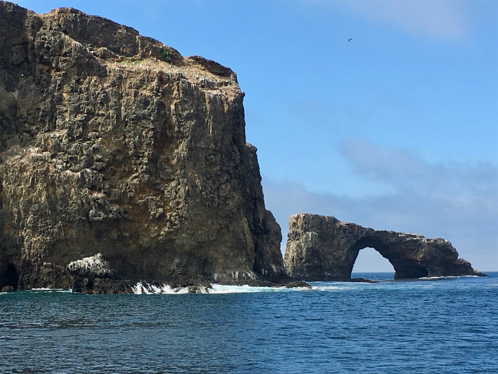

Tuesday, Jun 19, 2018, 1:20 PM PDT
Robert J. Lagomarsino Visitor Center, Channel Islands Nat'l Park, Ventura, CA, United States
66°F Sunny
66°F Sunny
![]()
6/18 Joshua Tree Visitor Center, CA -> Palm Desert, CA 28 mi, 1 hr
6/18 Palm Desert, CA -> Channel Islands NP Visitor Center, CA 177 mi, 3.75 hr
Trip Total: 4,016 mi
Leaving Joshua Tree, we headed west down the mountains to the Coachella Valley floor for an overnight stay in Palm Desert. The next morning, we continued west through the San Gorgonio Pass, which has about 4,000 wind turbines, an impressive sight. Desert finally turned to green, slicing through the northern suburbs of smog-filled Los Angeles in traffic, arriving at the Pacific Ocean in Ventura.
We took a 3-hr boat tour of the Channel Islands, skipping the option to be dropped off on the island in the morning and later picked up, that day or the next. There are eight Channel Islands, five of which are part of the National Park. They are about 100 miles west of LA, and about 20 miles from Ventura. Home to 2,000 species of plants and animals, 145 are found only here. The tour headed to Anacapa Island. Along the way, we saw a superpod of several hundred dolphins, and sea lions on the rocky coves.





